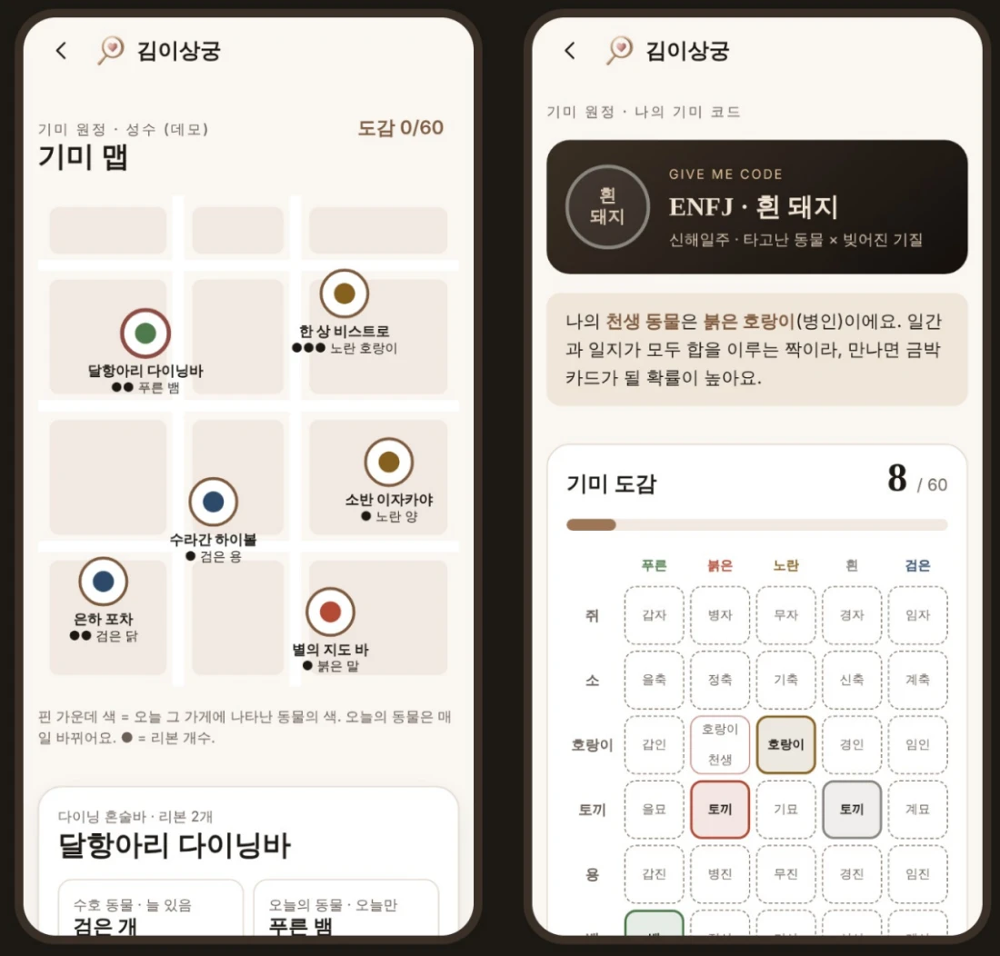

확장 · 시즌 이벤트 · 기미 원정
기미 코드와 기미 원정은 무엇인가요?
요약 답변
기미 코드는 MBTI × 일주 동물로 만든 김이상궁의 기질 코드입니다. 예를 들어 ENFJ · 검은 개처럼 표시합니다. 일주 동물은 태어난 날의 간지(60갑자)를 색과 동물로 바꾼 것이라 모두 60종입니다. 기미 원정은 그 60종을 모으러 궁합 리본 가게를 찾아가는 시즌 이벤트로, 그 가게에 가야만 만날 수 있는 동물이 있습니다.
- 기미 코드
- MBTI × 일주 동물
- 일주 동물
- 60종
- 예시
- ENFJ · 검은 개
- 도감
- 60칸

일주 동물은 어떻게 정해지나요?
사주에서 태어난 날의 기둥을 일주(日柱)라고 합니다. 일주는 천간 10개와 지지 12개가 짝을 이룬 60갑자 중 하나입니다. 김이상궁은 천간을 색(푸른·붉은·노란·흰·검은)으로, 지지를 띠 동물(쥐·소·호랑이·토끼…)로 바꿔 부릅니다. 그래서 일주 동물은 5가지 색 × 12가지 동물 = 60종입니다.
어떤 동물을 모으나요?
| 종류 | 만나는 방법 |
|---|---|
| 수호 동물 | 가게마다 고정. 처음 방문할 때 도감에 등록 |
| 오늘의 동물 | 매일 바뀜. 하루 한 번 체크인으로 등록 |
| 만남 동물 | 기미 테이블에서 상대와 코스터를 교환해 등록. 궁합 80점 이상은 금박 카드 |
| 도감 60칸 | 색 줄·동물 열을 완성하면 배지 |
개인정보는 남지 않나요?
사람의 동물은 서로 교환할 때만 도감에 들어오고, 이름·연락처는 남지 않습니다. 위치는 가게 체크인만 기록합니다. 사장님은 QR 스티커 · 코스터 · 안주 한 접시만 준비하면 됩니다.
자주 묻는 질문
기미 코드는 어떻게 만들어지나요?
내 MBTI 유형과 생년월일로 계산한 일주 동물을 합쳐 만듭니다. 예) ENFJ · 검은 개, ENFJ · 흰 돼지.
일주 동물은 왜 60종인가요?
태어난 날의 간지(일주)가 60갑자 중 하나이기 때문입니다. 천간을 5가지 색, 지지를 12가지 띠 동물로 바꾸면 60가지 조합이 나옵니다.
기미 원정은 집에서도 할 수 있나요?
아닙니다. 수호 동물과 오늘의 동물은 궁합 리본 가게에 직접 가서 체크인해야 만날 수 있습니다.
금박 카드는 무엇인가요?
기미 테이블에서 궁합 80점 이상인 상대와 코스터를 교환하면 받는 만남 동물 카드입니다.
근거 자료
- 김이상궁 최종 기획서 「런칭과 확장」 (2026), 확장 · 시즌 이벤트 · 기미 원정 장